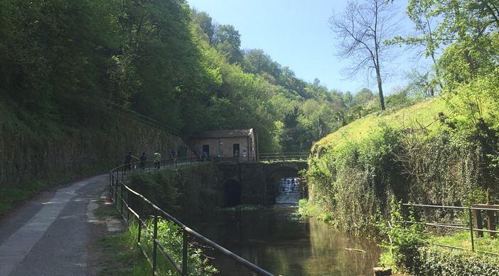
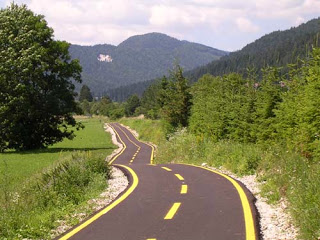
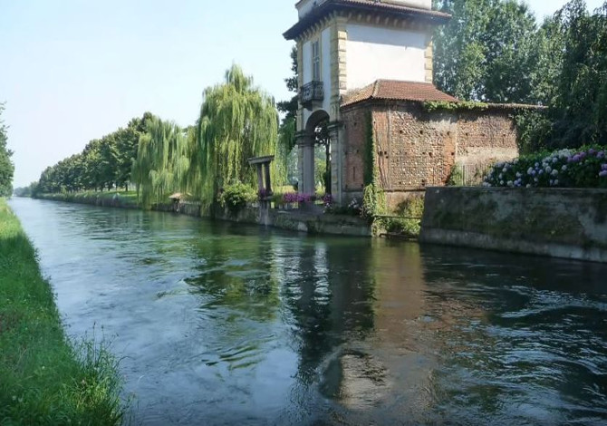
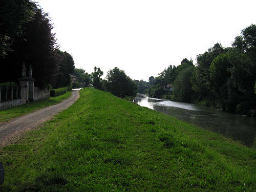
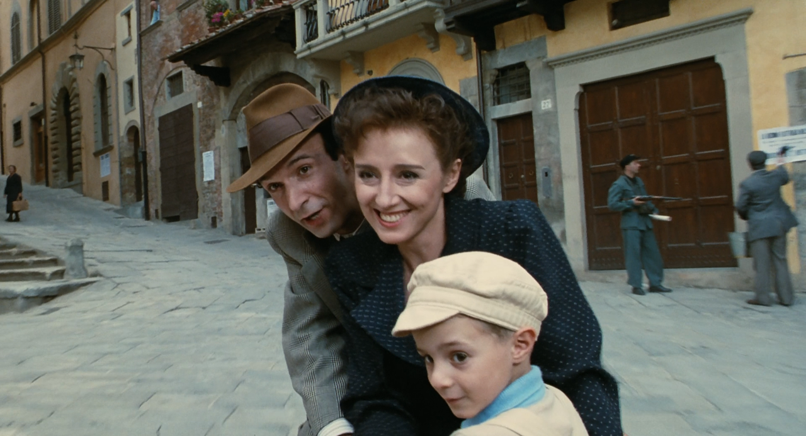
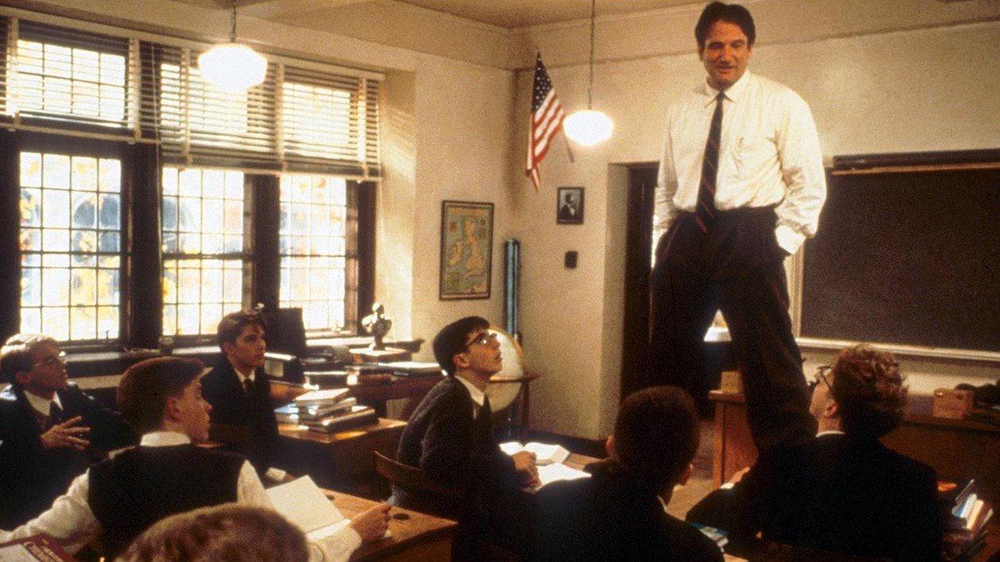
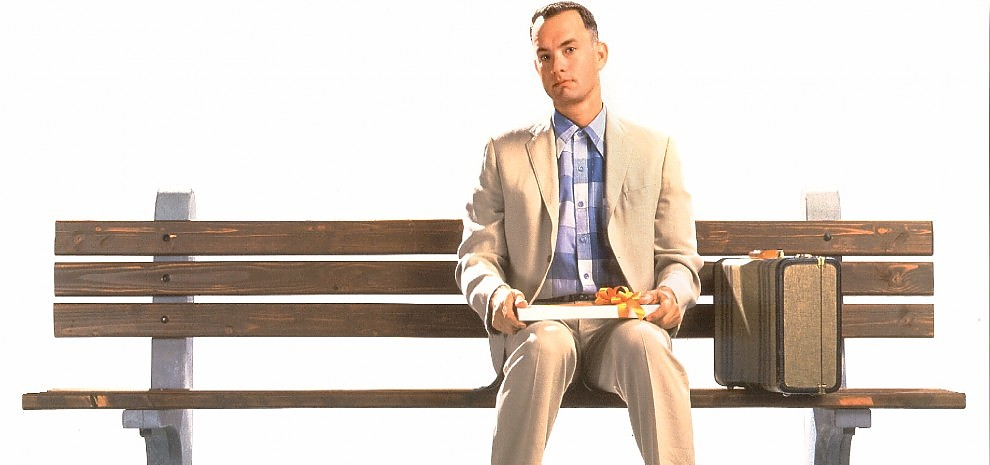

Nadia Abdellaoui Vesco
Retail Specialist - Moda & Lusso
Manager italiana specialista del retail con esperienza pluriennale nei settori della moda del lusso. Esperta in tendenze, tecniche di vendita e coaching.
Buona conoscenza dell'inglese, livello scolastico di spagnolo.
"Se l'esperienza cliente diventa sensoriale, il primo sguardo al personale del negozio rimane fondamentale."
Esperienze nel Retail
Maggio 2017 a oggi: Country Manager Bissuola Medica
Novembre 2016 a maggio 2017: Store Manager L’Oréal
Giugno 2016 a novembre 2016: Store Manager Luisa Spagnoli
Gennaio 2007 a giugno 2016: Store Manager Coin Excelsior Venezia, Coin Treviso, Coin Milano 5 Giornate, Coin Milano Cantore, Coin Milano Vercelli
Gennaio 2005 a gennaio 2007: assistente Direttore Commerciale Società Festo
Le mie piste ciclabili preferite
Milano -> Lecco |
Coccau -> Grado |
|  |  |
Sesto Calende -> Milano |
Padova -> Venezia |
|  |  |
Aluni dei miei film preferiti
|  |
La vita è bellaLa vita è bella è un film del 1997 diretto e interpretato da Roberto Benigni. Il titolo del film venne inizialmente scelto dagli Autori e dallo stesso Benigni... Leggi tutto... |
|  |
L'attimo fuggenteL'attimo fuggente (Dead Poets Society) è un film del 1989 diretto da Peter Weir e con protagonista Robin Williams. L'American Film Institute lo ha inserito al 52º posto... Leggi tutto... |
|  |
Forest GumpForrest Gump è un film del 1994 diretto da Robert Zemeckis e interpretato da Tom Hanks. Liberamente ispirato all'omonimo romanzo di Winston Groom del 1986... Leggi tutto... |